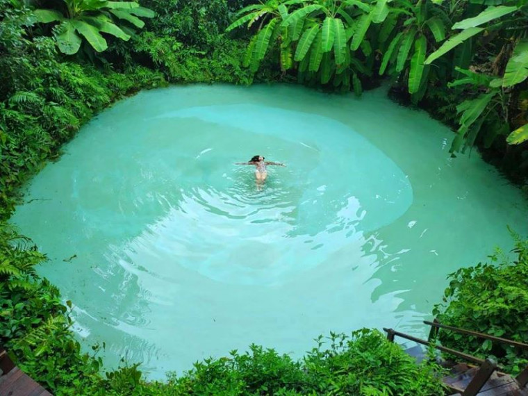

Tocantins é um estado localizado na região Norte do Brasil, com a capital em Palmas. Criado em 1989, é o estado mais recente do Brasil. A economia do Tocantins é baseada principalmente na agropecuária, com destaque para a produção de soja, milho, arroz e criação de gado. O estado também se destaca na geração de energia elétrica, devido à presença de várias hidrelétricas. Tocantins tem uma natureza diversificada, com cerrados, rios e áreas de transição entre a Amazônia e o Cerrado. O Parque Nacional do Jalapão é uma das principais atrações turísticas, conhecido por suas dunas, cachoeiras e paisagens impressionantes. O estado também possui uma rica cultura, com influências do sertão e de povos indígenas.
